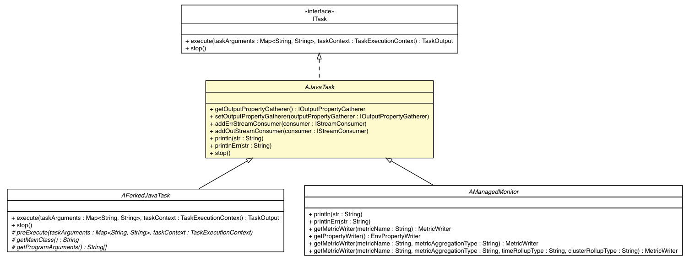

com.singularity.ee.agent.systemagent.api
Class AJavaTask

java.lang.Object
 com.singularity.ee.agent.systemagent.api.AJavaTask
com.singularity.ee.agent.systemagent.api.AJavaTask
- All Implemented Interfaces:
- ITask
- Direct Known Subclasses:
- AForkedJavaTask, AManagedMonitor
public abstract class AJavaTask
- extends Object
- implements ITask
| Methods inherited from class java.lang.Object |
clone, equals, finalize, getClass, hashCode, notify, notifyAll, toString, wait, wait, wait |
| Methods inherited from interface com.singularity.ee.agent.systemagent.api.ITask |
execute |
AJavaTask
public AJavaTask()
getOutputPropertyGatherer
public IOutputPropertyGatherer getOutputPropertyGatherer()
setOutputPropertyGatherer
public void setOutputPropertyGatherer(IOutputPropertyGatherer outputPropertyGatherer)
addErrStreamConsumer
public void addErrStreamConsumer(IStreamConsumer consumer)
addOutStreamConsumer
public void addOutStreamConsumer(IStreamConsumer consumer)
println
public void println(String str)
printlnErr
public void printlnErr(String str)
stop
public void stop()
- All the implementations of AJavaTask MUST call super.stop() in order to
successfully close the input and output streams
- Specified by:
stop in interface ITask